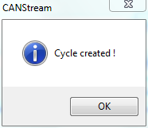

To create a cycle using this method, simply follow steps described below:
Trace files list control commands are located on the left of the list. There are three commands:
 Add: Add a PCAN Trace file into the list.
Add: Add a PCAN Trace file into the list.
 Del: Remove a PCAN Trace file from the list.
Del: Remove a PCAN Trace file from the list.
 Clear: Clear all PCAN Trace file from the list.
Clear: Clear all PCAN Trace file from the list.
 on the right of the ‘CAN Configuration’ field. This CAN configuration is only use to get the CAN bus speed (1000 kBit/s, 500 kBit/s) nothing else.
on the right of the ‘CAN Configuration’ field. This CAN configuration is only use to get the CAN bus speed (1000 kBit/s, 500 kBit/s) nothing else. on the right of the ‘Output cycle file’ field.
on the right of the ‘Output cycle file’ field.During the cycle creation process two progress bars appears.

The first bar, on the top, indicates the process progression among PCAN Trace file to convert. The second bar, at the bottom, indicates the progression of the conversion for the current file.
At the end of the cycle creation, when all PCAN Trace file have been converted, a message box pops up indicating that process has ended.

At any time in the process it is possible to cancel the cycle creation by clicking the ‘Cancel’ button .
Created with the Personal Edition of HelpNDoc: Produce Kindle eBooks easily